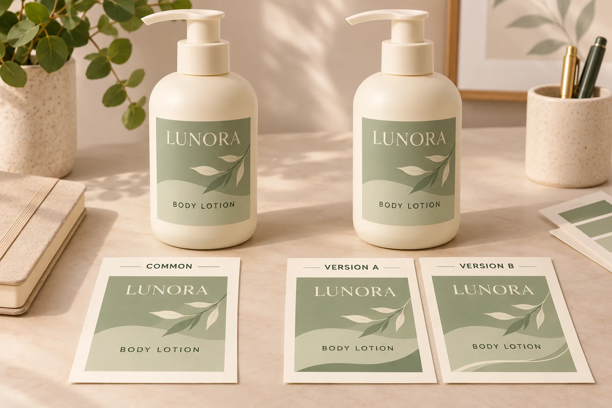
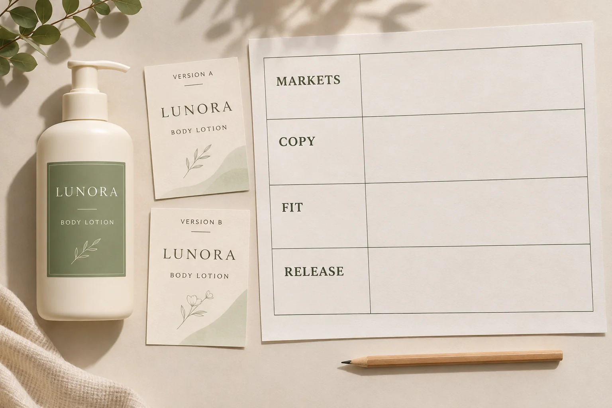

Use one cosmetic label across several markets only when the responsible brand reviewers accept the same complete artwork for every intended destination and the content fits the actual pack. Order separate versions, or groups of markets sharing one version, when those conditions cannot be met. Settle which markets each printed version may serve before combining the quantities in a quotation.
The purchasing decision is the number and coverage of the artwork versions to buy. It is different from checking the translations inside a version. A multilingual label can contain several languages while still being unsuitable for a particular product, market or pack configuration. Conversely, a separate market version does not become acceptable merely because its filename names that destination.

Define the product and the intended destinations
Start with one identified product, formula reference, declared pack and packaging arrangement. List the actual destinations being considered and the planned quantity for each. Separate a confirmed launch from a possible future market. Otherwise an uncertain future requirement can enter a common label design without anyone deciding whether it belongs in the current order.
Ask the brand's responsible reviewers for the accepted content and placement requirements for those exact destinations. Include the wording, language versions, contacts, claims and other pack information they identify as relevant. These are inputs to the label purchase, not decisions a printer should infer from a country name or a translation folder.
INCIkit's own market-version feature example keeps versions for one cosmetic product and explicitly distinguishes those drafts from regulatory approval. It illustrates the need to identify a version's scope; it does not establish that a particular label is eligible for a market or that YT supplies that software.
Test whether one complete artwork can be shared
Build a common candidate from the approved inputs, then ask each responsible reviewer whether that exact complete version is accepted for the intended pack and destination. Do not treat approval of one paragraph as acceptance of the whole combined label. Record the artwork revision and the scope of the response.
The FDA's cosmetic labeling guide treats placement, prominence and language as distinct subjects for the United States. A page fitting on screen is therefore not, by itself, a market review. This guide supplies no country-by-country legal checklist; obtain the applicable review for each destination rather than extending one market's answer to another.
If requirements can coexist in one accepted version, keep that candidate in the comparison. If the wording or pack arrangement differs, identify the separate version that is needed. Some projects can group several destinations under one version and keep another distinct. The useful output is an acknowledged version-to-market coverage list, rather than a rule that every country needs its own design.
Once the versions are chosen, the multilingual copy map controls which approved text blocks go into each file and panel. That later reconciliation does not choose how many versions should be purchased.
Check physical fit before treating a common version as practical
Place the proposed content on the actual label panel and review it at intended print size. Keep the information that the reviewers require, rather than silently shortening it or reducing every line to make a common layout look tidy. Use the bottle-size and paper-fit guide to keep the pack and proposed dimensions identified.
If the combined content cannot be accepted on the intended pack, compare a smaller group of markets per version or another supported packaging arrangement. The expanded-content guide explains an additional-surface option and its access and application questions. Extra panels require their own supplier and brand review; they do not automatically solve the market-coverage decision or establish YT capability.
Use a version-coverage purchasing brief
Complete these four fields for the common proposal and the separate-version proposal. Keep the proposed artwork IDs beside their accepted destination lists.
| Field | Record | Choice or hold |
|---|---|---|
| Product and demand | Exact product/pack reference, confirmed destinations and planned quantity by destination. | Are both proposals supplying the same current requirement? |
| Artwork coverage | Proposed version ID, complete artwork revision and acknowledged market list. | Can one version serve every listed destination, or are separate groups needed? |
| Applied fit | Actual-size layout, pack reference, required content and relevant physical review. | Is the common layout usable without an unresolved content or space compromise? |
| Supply and release | Quantity per version, setup/sample scope, identification, release owner and open approvals. | What can be ordered now, and which version remains pending? |
First fix the product and current demand. Next obtain the coverage response for each candidate, then review the complete layout on the intended pack. Finally assign quantities to the accepted versions and compare the corresponding written offers. Hold a destination with no accepted artwork reference; do not include it in a shared stock pool simply because the bottle is identical.

Compare quantities and the effect of later changes
For an illustration, two accepted destinations need 600 and 400 finished packs of the same product. A common version could mean 1,000 labels of one artwork if it is accepted for both. Separate versions could mean 600 of one and 400 of another. Those figures are not minimum-order offers, setup allowances or a price forecast. Ask what each actual supplier proposal includes.
A common pool may allow allocation to change between its accepted destinations, provided the pack and version remain suitable. Allocate each physical label once. Separate versions limit that reassignment but can keep a change on one destination's artwork distinct. If a later requirement changes, have the responsible reviewer determine which versions remain accepted; do not assume every old label must be discarded or can continue to be used.
A hypothetical stable product with accepted combined copy and enough panel space may suit a common label. Another with different approved content or a cramped combined layout may suit separate versions. Compare setup, proofs, quantities, identification and the supported release plan. One artwork is not a saving if it leaves an intended destination unresolved.
Request comparable artwork-version quotes
For cosmetic bottle and jar labels, send the pack reference, proposed dimensions, approved artwork candidates, acknowledged market coverage and quantities per version. Mark approvals that remain open. Ask for the printed-label scope of the common and separate-version options. The form prepares a message; send files by email or WhatsApp.
Prepare a version-scope inquiry